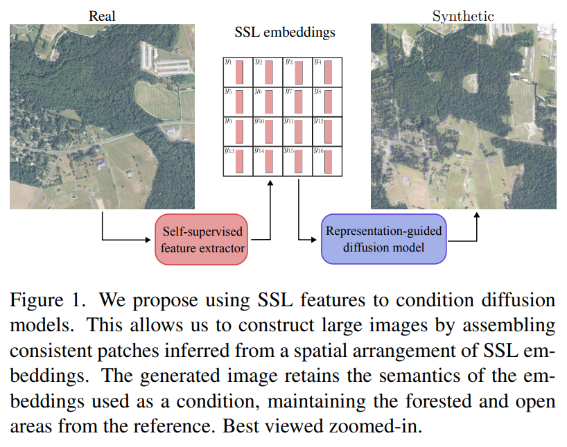
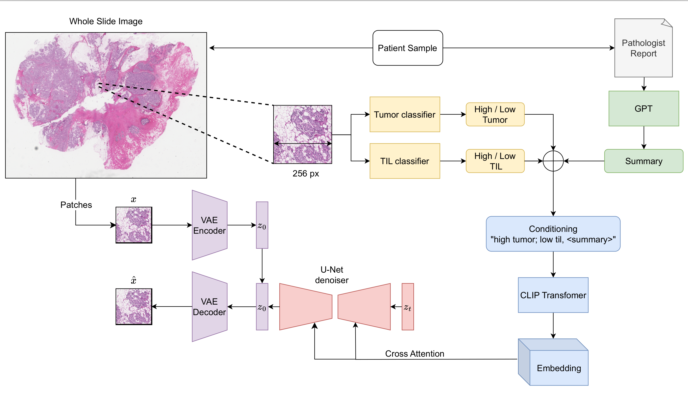
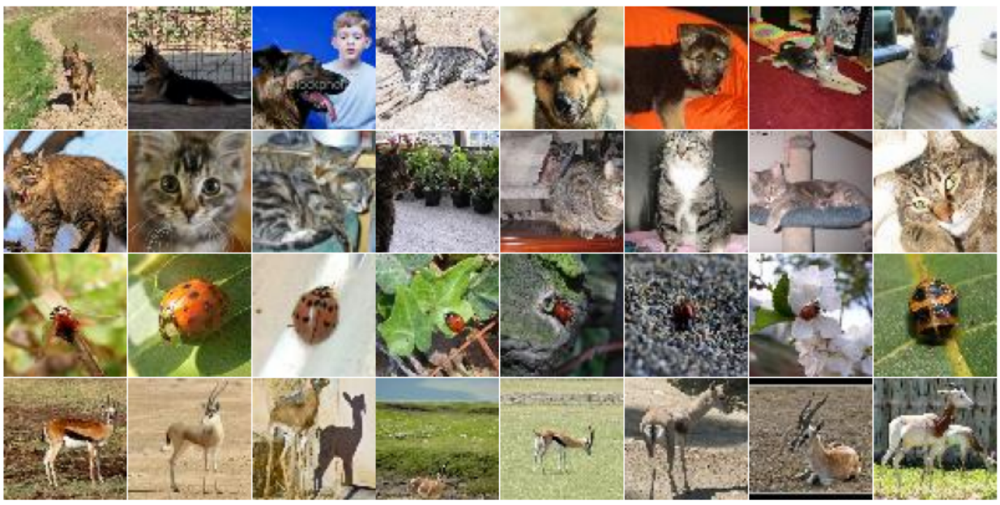
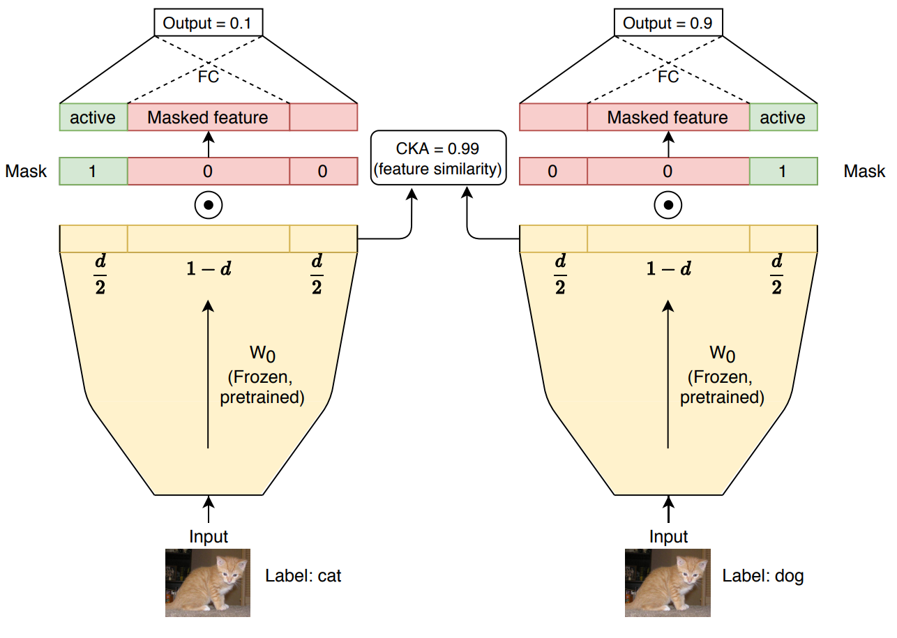
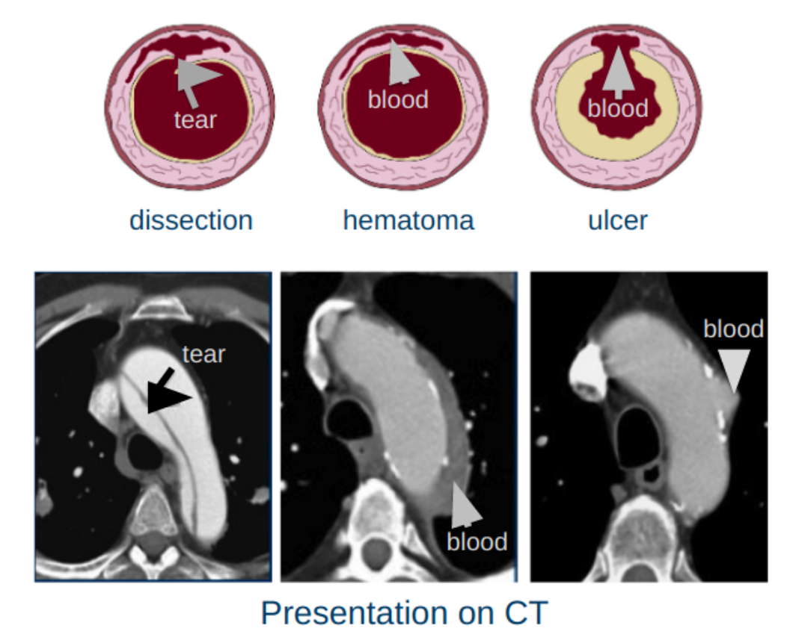
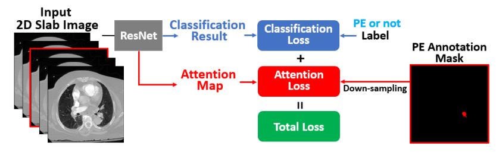
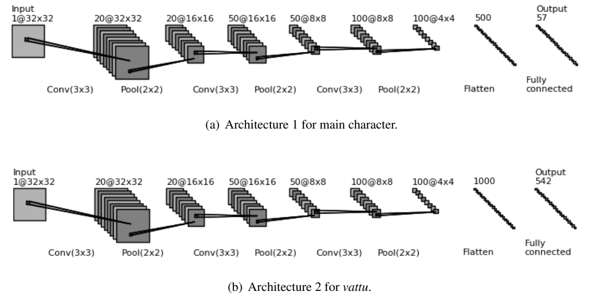

|
Srikar Yellapragada
I am a PhD student in the Computer Science department at Stony Brook University, advised by Dimitris Samaras My research is focused on
Computer vision.
Before this, I was a Software Engineer at Bloomberg
LP; our team built an ETL pipeline for the ingestion of third party data.
In 2020, I obtained my Masters in Computer Science from NYU, where I worked with Kyunghyun Cho's group on Similarity
of Neural Networks, and interned at IBM Watson
Health.
Previously, I obtained a B.Tech in Electrical Engineering from Indian
Institute of Technology, Hyderabad, where I worked with Sumohana Channappayya on Image Processing. I
interned at Video Analytics Lab, IISc Bangalore.
In my free time, I enjoy playing video games. I'm a big fan of strategy games, such as Dota 2 and
Age of Empires 2.
Email /
CV
/
Linkedin /
Google Scholar
/
Twitter /
Github
|
|
News
|
- [Feb. 2024] Our
large image generation research has been accepted at CVPR 2024.
- [Oct 2023] PathLDM has been accepted for WACV, 2024.
- [Aug 2023] Our study on conditional generation with denoiser
representations has been accepted
at BMVC 2023.
- [Aug 2022] Started my PhD at Stony Brook University.
|
|
Publications / Pre-prints
|

Learned representation-guided diffusion models for large-image generation
Alexandros Graikos*, Srikar Yellapragada*, Minh-Quan Le, Saarthak Kapse, Prateek
Prasanna, Joel Saltz, Dimitris Samaras
IEEE/CVF Conference on Computer Vision and Pattern Recognition (CVPR), 2024
paper
We condition latent diffusion models with SSL embeddings, and generate large images in
histopathology and satellite imagery.
|

PathLDM: Text conditioned Latent Diffusion Model for Histopathology
Srikar Yellapragada*, Alexandros Graikos*, Prateek Prasanna, Tahsin Kurc, Joel Saltz,
Dimitris Samaras
In Winter Conference on Applications of Computer Vision (WACV), 2024
paper /
code
We build a text conditioned LDM for histopathology using GPT summarized
text reports and CLIP embeddings.
|

Conditional Generation from Unconditional Diffusion Models using Denoiser
Representations
Alexandros Graikos, Srikar Yellapragada, Dimitris Samaras
In British Machine Vision Conference (BMVC), 2023
paper /
code /
poster
We condition unconditional models in limited data scenarios using an
auxiliary network built upon denoiser representations.
|

Are the proposed similarity metrics also a measure of functional similarity?
Manikanta Srikar Yellapragada
Masters Thesis, 2020
paper
Short ans: NO.
Existing representation similarity metrics cannot fully
capture the output (functional) similiarity of a neural network.
|

Deep learning based detection of acute aortic syndrome in contrast CT images
Manikanta Srikar Yellapragada, Yiting Xie, Benedikt Graf, David Richmond, Arun
Krishnan, Arkadiusz Sitek
In International Symposium on Biomedical Imaging (ISBI), 2020
paper
|

Automatic diagnosis of pulmonary embolism using an attention-guided framework: a
large-scale study
Luyao Shi, Deepta Rajan, Shafiq Abedin, Manikanta Srikar Yellapragada, David Beymer,
Ehsan Dehghan
In Medical Imaging with Deep Learning (MIDL), 2020
paper
|

Optical character recognition (OCR) for Telugu: Database, algorithm and application
Konkimalla Chandra Prakash, Y.M.Srikar, Gayam Trishal, Souraj Mandal, Sumohana S
Channappayya
In International Conference on Image Processing (ICIP), 2018
paper /
code
|
|
{kind=link}
{kind=link}
{kind=link}
{kind=link}
{kind=link}
{kind=link}
{kind=link}